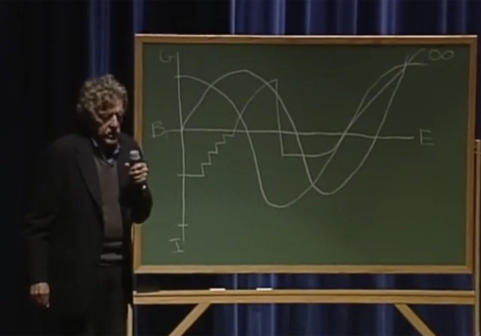

A passion project by Derin holds a B.A. in Psychology, Cognitive Science, and Art History from Georgetown University. She is a programmer, designer, and writer from Istanbul, now based in New York. She is an avid moviegoer. She also hates writing in the third person.
Every screenplay is a line that rises and falls. This is what 1,627 Hollywood films look like when you plot their feelings from first page to last.

Kurt Vonnegut spent the second half of his life lecturing on an idea from the first.
Every story ever written, he said, has a shape. We follow a character moving between good fortune and ill fortune, from the beginning to the end of a story.
He named a few of these shapes and drew them on chalkboards in lecture halls across the US. The 2004 version is one of the few that survived on tape.
Vonnegut’s idea was originally for books, not films.
Computers, he said, could probably find the rest.
He didn’t live to do it. But analysis methods got cheap, screenplay archives went online, and his question turned into something a laptop could answer in an afternoon.
So I picked up where he left off and asked his question for Hollywood.
How many shapes are in Hollywood? And what do these shapes look like?
warm up
A single screenplay, page one to the end, plotted as the emotional pulse of its writing. A sentiment model reads it in twenty chunks and scores each one. The line rises with joy and falls with sorrow.
Peaks are …’s emotional highs. Valleys are its emotional lows.
Keep scrolling to follow the pulse.
Each dot is a turning point where the story visibly changes its mind. A great screenplay doesn’t need many of them, but it does need the right ones.
zoom out
Every screenplay on Script Slug from 1980 to today. Same process, same grid. Vonnegut said a computer could find the common shapes. So I gave it a go with machine learning.
the answer
Six shapes came back for 1,627 screenplays. Reagan et al. found the same six for books back in 2016. They line up with what Vonnegut drew on the chalkboard, give or take. He named them. Click one to see what inspired their name.
one by one
The bold line is the average across hundreds of screenplays. The faint lines are the twenty films that hug the average closest. Same shape, different stories.
1 of 6
across time
Every film leans most on one of the six shapes. Sort all 1,627 of them by that shape, decade by decade. Has the mix Hollywood reaches for changed?
the steady state
Every dot is a film, sorted by the shape it leans on most. Some decades have more films than others, but the proportions across shapes barely move. Hover over an archetype or a decade to compare across the grid.
and yet
Data suggests it could be for a few reasons.
first reason
Horror and thrillers used to leave room for things to happen without anyone talking. Not anymore. By the 2010s, nearly every genre runs on dialogue, catching up to Romance, which was already nearly all talk. The scripts that used to sit at the quiet end like Friday the 13th and Body Heat don’t get written anymore. Hover for the specifics.
second reason
The genre mix has bent toward drama. Comedy has halved. Adventure has nearly vanished. But the bigger story sits inside the genres themselves. In Drama, Rags to Riches has collapsed. In Horror, Icarus has surged. In other words, we’re watching heavier movies now. When things go well, it doesn’t last. When they go badly, our heroes don’t recover.
your turn
Pick one. Or rummage through all 1,627. Dots mark the turning points.
coda
And these shapes are equipment for living, kind of like practice runs for the future. The shapes haven’t changed.
But our heroes inside them aren’t recovering the way they used to. So what kind of future are we practicing for?